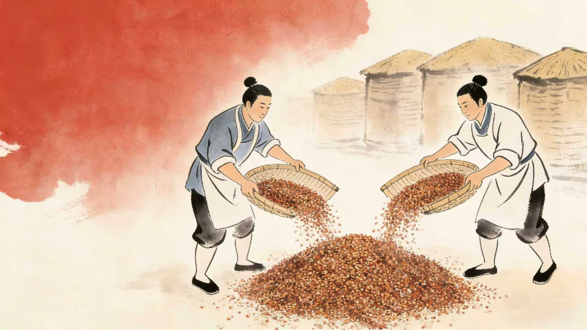

选料
白酒酿造的选料环节是品质的根基，核心选用高粱、小麦、大米、玉米等富含淀粉的谷物。需严格筛选颗粒饱满、无霉变、无杂质的原料，确保淀粉含量充足；同时根据香型特点调整原料配比——浓香型以高粱为主，清香型搭配豌豆、大麦，酱香型优选红缨子高粱，为后续的发酵、蒸馏筑牢风味基础。

白酒酿造的选料环节是品质的根基，核心选用高粱、小麦、大米、玉米等富含淀粉的谷物。需严格筛选颗粒饱满、无霉变、无杂质的原料，确保淀粉含量充足；同时根据香型特点调整原料配比——浓香型以高粱为主，清香型搭配豌豆、大麦，酱香型优选红缨子高粱，为后续的发酵、蒸馏筑牢风味基础。